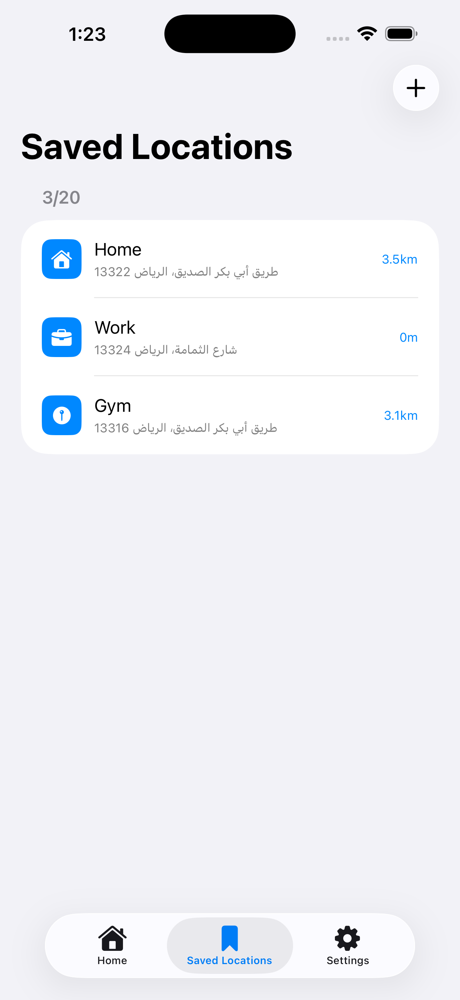
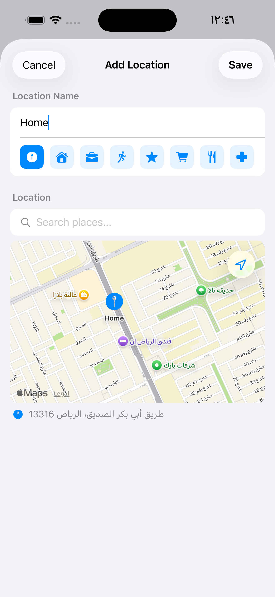

Saved Locations
Your favourite places, always ready.
Save up to 20 places and reuse them when creating reminders — no searching every time.

13_saved_locations_screen.pngAdding a Saved Location
- Tap the Bookmarks tab at the bottom
- Tap Add Location
- Search for a place or tap the map to pin it
- Give it a name — e.g. "Home", "Office", "Gym"
- Tap Save

14_add_saved_location.pngUsing in a Reminder
When creating a reminder, tap Select Saved Location. A sheet slides up with your saved places. A checkmark shows the currently selected one.

Editing or Deleting
Swipe left on any saved location to reveal Edit and Delete.